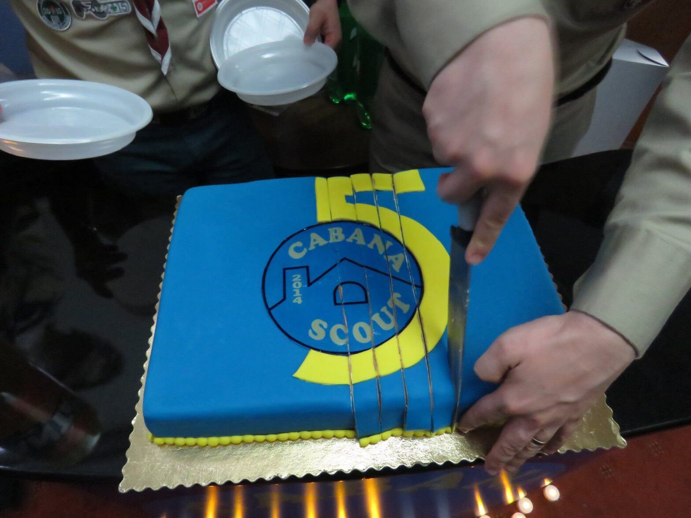

Primii 5 ani

Pentru Cabana Scout, cifra 5 are o semnificație deosebită anul acesta, deoarece acum 5 ani am apărut ca un grup mic și timid între Cercetașii României. Pe lângă campul de vară care va marca acest eveniment, am dorit să facem ceva și pentru prietenii și părinții care nu vor ajunge în camp.
Astfel, 13 aprilie a reprezentat atât depunerea promisiunii aspiranților, cât și un mod de a arăta prin filmulețe și momente artistice cât de productivi am fost în ultimii anii.
Organizând acest mic eveniment, mi-am dat seama că indiferent de colțurile lumii în care ne aflăm, faptul că am împărțiți la un moment dat o felie de pâine în campuri ne unește și, chiar dacă cercetășia nu mai face parte din viața respectivului, a rămas o scânteie în fiecare.
Acest eveniment nu s-a putut realiza fără prietenii de la Muzeul Satului, cărora le suntem recunoscători!
Anna, explorator